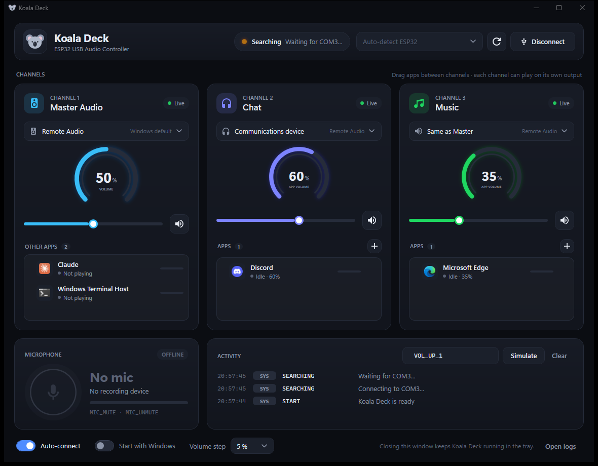
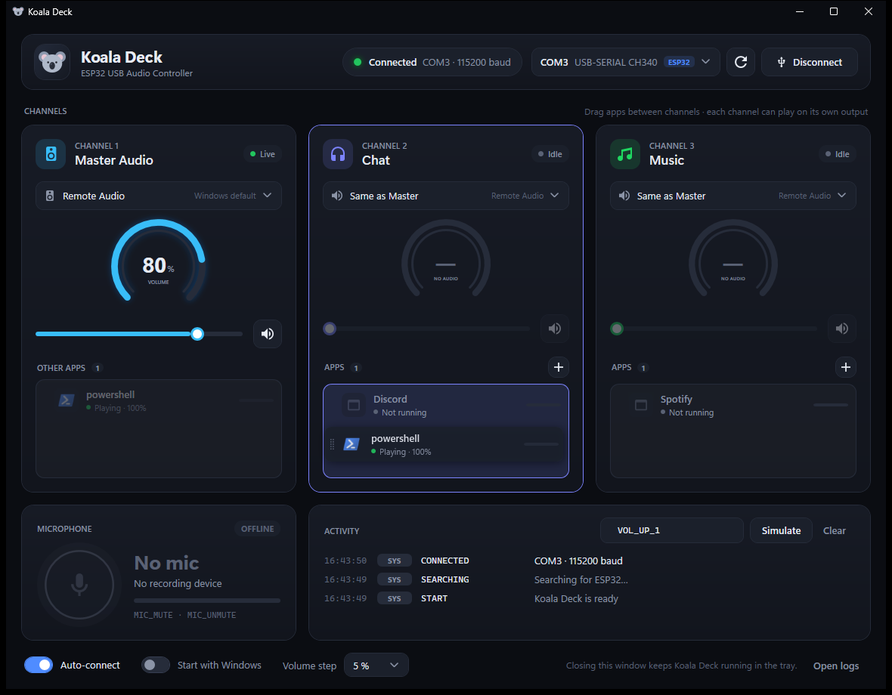
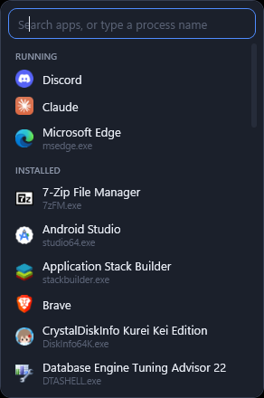

The dashboard
Three channels, one microphone, everything live
Each channel shows its volume, its output device and the apps inside it, with live audio levels. Close the window and it keeps running in the tray.



How it works
A plain text line over USB, both ways
The deck sends a short command when you turn a knob. Koala Deck applies it in Windows and answers with the real state, so the deck's display never drifts.
VOL_UP_2 → Chat volume up one step
MIC_TOGGLE → mute or unmute the microphone
SYNC:12,50,80,0,0,0,1 ← the real Windows state, back to the deckOne command per line. A SYNC: line goes back after every command, on request, and whenever the volume changes anywhere else in Windows — so 12% shows as 12%, not the nearest step. The full protocol and an Arduino example are in the README.
What it does
More than a volume knob
Group apps into channels, send each channel to its own speakers or headset, and let the deck show what Windows actually did.
Three channels
Master, Chat and Music. One knob each, plus mute. Chat starts with Discord; put any apps you like in Chat or Music.
App groups by drag and drop
Drag apps between channels, or add them from a searchable list of running and installed apps. Group members are remembered even while the app is closed.
An output per channel
Send Chat to your headset and Music to your speakers. Chat can follow the Windows communications device, and apps that start later are routed automatically.
Microphone mute that sticks
Mutes the default recording device and the communications device if they differ — which is usually what Discord or Teams is listening to.
Two-way sync
Change the volume with the mouse, the keyboard or the Volume mixer, and the deck hears about it. Its display always matches Windows.
Plug in and forget
ESP32 USB chips are detected and picked automatically. Pull the cable and plug it back — even on a new COM port — and Koala Deck reconnects by itself.
Simulator built in
No hardware yet? Type commands like VOL_UP_2 in the Activity panel and watch them work — and see the SYNC line the deck would receive.
Getting started
From download to first knob turn
- Download from GitHub ReleasesPick the installer (recommended) or the portable exe. Both are self-contained — no .NET install needed.
- Get past SmartScreenThe files aren't code-signed yet, so Windows may say it protected your PC. Click More info, then Run anyway.
- Plug in your deckKoala Deck finds the ESP32's COM port and connects. The tray koala turns green when it's linked.
- Put apps in channelsDrag apps into Chat and Music, pick an output for each, and turn Start with Windows on if you want it always there.
At a glance
The details
| Platform | Windows 10 (1809 or later) or Windows 11, 64-bit |
| Downloads | Installer (~50 MB, per-user, no admin rights) or portable exe (~67 MB) |
| Hardware | An ESP32 board over USB serial at 115200 baud — Espressif native USB, CP210x, CH340/CH9102 or FTDI |
| Built with | C# · .NET 10 · WPF · NAudio |
| Account | None. Nothing to sign up for |
| Your settings | A JSON file in your own AppData folder |
| Source | github.com/sambanf/koaladeck |
Questions
Frequently asked
Do I need to build the hardware myself?
Yes — Koala Deck is the PC side. Any ESP32 that prints commands like VOL_UP_1 over USB serial will work. The README has the full command list and an Arduino example that reads the SYNC lines back.
Can I try it without an ESP32?
Yes. Type commands into the Simulator box in the Activity panel and Koala Deck acts on them exactly as if the deck had sent them.
Why does Windows warn me when I run it?
The installer and exe aren't code-signed yet, so SmartScreen doesn't recognise them. Click More info, then Run anyway. The release page lists SHA-256 hashes if you want to check the file.
My Chat or Music channel says "No audio".
The app in that group hasn't opened an audio session yet — Spotify, for example, doesn't until it plays something. Settings still apply the moment it starts.
Another program is using the COM port.
Close the Arduino IDE or PlatformIO serial monitor. Koala Deck connects on its own as soon as the port is free.
How do I update or uninstall?
Run the newer installer over the old one — it closes Koala Deck for you and keeps your settings. Uninstall from Apps & features; it asks whether to keep your settings and logs.
Give your volume a knob
Free on GitHub. Download the latest release, plug in your deck, and stop hunting for the Volume mixer.